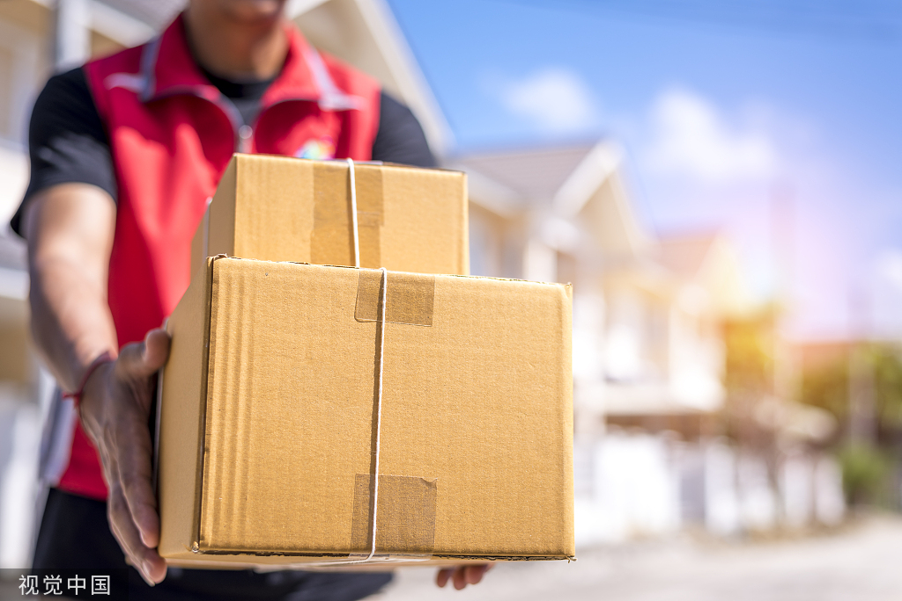

图片来源：视觉中国
舆情：人们关心哪些话题？
为了了解消费者与从业人员的观点与态度，我们采集了知乎上关于“快递”的问答，并进行了词频分析。
对消费者的意见进行分析，我们发现围绕“送货上门”这一问题的讨论最多。在消费者看来，快递员不送货上门，而将包裹直接放到驿站，已经成为一种“理直气壮”的惯例，这引起了消费者的不满与争论。除此之外，消费者也表达了对顺丰、邮政、极兔等快递企业的评价，快递价格是受到关注的重要因素。
在所有问题中，我们筛选出了快递从业人员（包括配送、分拣、站点运营、运输等）的回答。在围绕“送货上门”的讨论中，从业人员吐槽最多的因素包括时间、钱、客户投诉与罚款。工作量大、工作时间长、时间紧张、派费少，是快递员的普遍处境，而客户投诉、包裹延误、包裹遗失、揽件率不达标等问题所造成的罚款，最终也会落到快递员身上，从而增加快递员的工作压力。因此一些快递员表示，在这样的工作待遇下，他们无法向客户提供像顺丰一样的高质量服务。
在这场关于快递的论争中，快递员表示自己处在行业重重压迫的最底端，言语中流露出不满和委屈。而消费者大多认为自己没有义务为快递员的“怨气”买单，快递公司与从业人员之间的矛盾，不应该转嫁到消费者身上。
通过对知乎问答进行总结，我们发现，消费者常常遇到以下问题：
1、快递服务不到家
这是众多用户都有共鸣的一点，明明支付了邮费，快递按理说应该是送货上门的。但是现在快递员直接将快递扔到门口或者是代收点，拒绝送货上门。一旦打电话过去咨询，快递员会以各种理由推脱。花钱买方便却变了一件麻烦事，这让很多消费者都觉得很反感。
《<快递服务>邮政行业标准》中明确规定了服务时限：
- 4.4 服务时限
- 快递服务时限指快递服务组织从收寄开始，到第一次投递的时间间隔。
- 除了与顾客有特殊约定（如偏远地区）外，服务时限应满足以下要求：
- （a）同城快递服务时限不超过24小时；
- （b）国内异地快递服务时限不超过72小时。
2、快递丢件
快递丢件的问题时有发生，相信很多用户都有类似的体验，好端端的快递被冒领或者丢失。对于快递丢件的问题，不同快递公司处理规定不一样。有的规定超过14日以后，未提出索赔要求的，为自动放弃索赔权利。
3、先签字后验货
部分买家网购的商品，是可以先验货后签字的。但还是有一些快递公司要求先签字之后再进行验货，一旦有问题，消费者在索赔方面就会有一定的难度。
4、个人隐私容易泄露
快递行业内部管理制度不严，监管不力，有时候很容易出现个人隐私泄露的问题。这也是为什么现在有一些快递代收款骗局等事件发生的原因。
5、服务水平参差不齐
快递行业中很多都是采用承包制的，服务标准不统一。部分快递网点比较杂乱，而且行业中存在一些恶性的价格竞争，服务没有规范，质量差。如果出现一些快递丢失的问题，快递网点之间还会互相推诿责任。
消费者的维权途径
根据评论内容，我们整理出了消费者通常采用的维权途径：
-
如果消费者取件时发现快递破损，可以选择拒收快递。如果一定要接收破损快递的话，牢记开快递的时候一定要录像，如果后期需要维权的话，这是消费者最有力的证据。
-
如果对于商家或者快递公司的服务不满意，消费者可以向消费者维权机构投诉，请求帮助。如果确认是快递公司的问题，消费者可以向国家邮政局申诉，一般来说，申诉之后的第二天，快递公司就会给你打电话，解决问题。
-
当然，必要时，消费者可以通过向法院起诉维护自己的合法权益。
案例：维权效果研究
目前来看，快递维权的效果并不理想。在研究的内容中，周期长、耗时多、难度大等原因都是维权效果不理想的重要原因。
以下是知乎某用户的维权经历：
开端：大闸蟹死于延误
A从老家(安徽)买了2笼当地的大闸蟹（一笼价值400元）用快递公司大闸蟹专项快递邮寄到A的老丈人家（浙江），工作
人员说是次日达，也就是2019.9.12到。
开端：大闸蟹死于延误
A并没有收到大闸蟹，出于担心，A查询了大闸蟹物流情况，显示到达日期为2019.9.14号，那时大闸蟹必定已经死亡，
因此A第一时间拨打了快递公司客服电话9533885，希望客服能够关注物流进度。
尽管客服做了“按时到达的保证”，
仍有一笼大闸蟹没有按约定时间送达，并且全部死亡。
A表示拒收，并要求快递公司给出解释和相关赔偿，配送人员表示会有人后续联系A处理后续事宜。
维权：拒绝接受“赔偿"
客服联系A，赔偿A400元，A没有接受。首先是A的大闸蟹本身价值是400元，这不是赔偿，其次是没有按时送达导致死亡，
让A的家人没有在中秋佳节吃到大闸蟹。
维权：兜兜转转
快递公司无人主动联系A，期间A多次主动打快递公司客服电话，一直占线打不通。
无奈之下，A拨打12315消费者协会电话，被告知这是邮政部门监管的范畴。
A拨打邮政监管部门电话，部门将投诉记录在案，并给A快递公司总部的投诉电话，说先拨打快
递公司总部电话，如果7日之内没有解决可以再次投诉邮储监管部门。
快递公司总部电话打了好多次才打通，打通后让A等后续工作人员处理。
维权：此路不通
这期间没有任何快递公司工作人员主动联系A处理事情，反而是A多次主动打电话联系快递公司，但是只有一个结果，
就是打不通。
维权：短暂的回音
快递公司打电话联系A，由于工作原因，A没有接到快递公司的电话。后续A主动联系快递公司，电话依然打不进去。
维权：协商无果
9.25 A主动拨打快递公司客服电话多次，打通后客服表示记录了A的需求，后续会有理赔联系A。
但是9.26 A并未接到电话，无奈之下再次拨打监管部门投诉。打完监管部门的投诉电话的当天，快递公司很快就打
电话来沟通，提出多赔偿100元。如果接受，就把卡号给对方；如果不同意，快递公司也没有办法。
A向快递公司客服表达了两点诉求：（1）由快递公司相关负责人和A说明这件事情；（2）A需要双倍赔偿。
客服表示当天下午5点之前会有负责人联系A，但是当天A并未有快递公司负责人联系A。
结局：求助媒体
这期间快递公司没有任何人主动联系A，期间A多次主动拨打快递公司客服电话，均打不通，直到10.2号上午打通，但是
客服一直在和A打太极，推来推去，并不为A解决问题.实在无奈之下只有借助媒体，希望能够维护自己的权益。
在案例中，快递公司从配送环节到售后环节，始终没有正视客户的诉求；在客户维权期间，一直采取消极的冷处理方式，阻塞了沟通的途径;
对于同一个派件员经手的快递送达时间不一致的问题，未能进行解释说明；最后，快递公司也未能兑现沟通过程中的承诺。
根据我国快递市场管理办法规定，为保障寄件人的合法权益，快递企业应当提醒寄件人阅读快递运单的服务合同条款，并建议寄件人对贵重物品
购买保价或者保险服务，并在承诺时限内完成快件的投递，如在投递中发生延误，快递企业应当按照与用户的约定，依法予以赔偿；如果没有
约定，则按照邮政法、合同法等相关法律规定赔偿。
图片来源：视觉中国
是什么阻碍了快递服务水平的提高？
快递业的膨胀发展，一方面使整个行业承担着巨大的业务压力，另一方面，由此引起的利润空间的收缩，迫使个体从业者不断挑战自身劳动能力与时间的极限。
近十年间，全国的快递业务量持续攀升，即使是2020年初新冠疫情的冲击，也未能阻挡快递业蓬勃生长的趋势。截至今年12月8日，我国快递年业务量已经突破1000亿。今年11月，当消费者们忙着研究优惠规则、抢红包、付尾款时，广东省平均每天有9929.8万单快递正亟待网点的分拣和派发。这是最繁忙、最极端的情况。即使我们不论淡季旺季，将今年前11个月的业务量分摊给内地31个省份，每个省份每天依然要承担约947万的业务量。
为了适应快递业务量的狂野增长，全国末端网点的队伍也在不断壮大。尽管比较来看，各地的网点数量都与其快递业规模相称，但是对于电商与快递业高度发达的浙江、广东等地，每个网点每天仍然要承担不小的压力。相较于东部地区，西部地区如西藏、新疆的业务压力小得多，但这些地区由于距离遥远、服务设施不足，同样也面临服务缺失的问题。
总体上看，业务压力增大的同时，总体收入也增加了。但是微观上，平均每件快递的单价总体呈下降趋势。全国平均的快递单价从2020年的12元左右下降至目前的9块多。具体到各个公司，顺丰、圆通、申通等公司的单票收入也在减少，圆通、申通的单票收入已经分别降至2.29元、2.11元，即使是以服务质量为利润增长点的顺丰，单票收入也从2020年9月的18.47元降至2021年9月的17.60元。这其中有多方面的原因：一是电商零售业的发展使得快递业的商品结构发生了改变，二是快递企业通过价格战争取市场，尽管单票价格减少，企业仍然可以通过规模效应获利。
对于末端的从业人员来说，这个故事就不那么美妙了。单票价格的收缩意味着快递员钱包也将变瘦。对于加盟制的快递品牌来说，一件快递的运费，要在总部、转运、分拣、网点和末端派送各个环节分配，而快递员在派送过程中的电话费、交通费等还需要自己负担，在单件利薄的情况下，想要挣到足够的工资，就只能提高配送的数量。除了业务量的压力，平台还对快递员提出了时效考核的要求。事实上，这不仅是平台为了提高用户体验而设置的督促机制，还是国家标准的要求（见上文）与监管部门定期检测的指标。
上图是国家邮政局每一季度的时限准时率测算结果。尽管存在波动，但数据总体上是向着准时率提高、时限缩小发展的。这既离不开技术的进步、流程的优化，也离不开对从业人员的监管。因此，从“内在”需求上看，快递员为了在有限的工作时间内尽可能地增加派件的数量，必须争分夺秒，否则工作耗时将大大增加；从外部约束上看，这也是行业对快递员的硬性要求。除了时效要求，快递员还要经受“妥投率”与“投诉率”两项指标的考核。如果不能在规定时间内完成派送，快递员将面临罚款。综合以上因素，快递员为了节约打电话、等待客户、送货上门的时间成本，而选择花钱投放到驿站、代收点或快递柜，是快递行业发展的必然结果。疫情期间大力提倡无接触配送，快递柜行业规模扩大，一些客户处于隐私、安全等方面的考虑也默许了快递柜等配送方式，这些因素也促使快递员形成了“不送货上门”的习惯。
企业的业务规模可以不断扩张，实现从万到亿的突破，以后还有可能继续突破下去。但人不一样，人的一天只有24小时。人不仅在时间上有极限，在体力、精力、能力、财力上也是有极限的。换言之，快递员被迫采取”薄利多派“的工作策略，实质上是在以一种剥削和榨取自身时间和精力的方式来满足自己和家人基本的生活。2017年发表的一项调查研究表明，快递员几乎没有休息的时间。除了白天的派送任务，快递员早上和晚上还要到网点进行分拣工作，每天工作时长在10个小时左右，甚至会超过12个小时。而中国邮政快递报社公布的《快递员生存报告（2018）》表明，非快递业务旺季，70.77%的快递员月收入在5000元以下，即使在旺季，收入超过8000元的快递员也仅占14.6%。在快递业发达的大中城市，这个水平的薪资很难换取较好的住房、医疗和教育资源。尽管快递员从事这份工作的原因是能获得较高的收入，但是他们付出极大的精力所获得的回报，并不能支持他们安心地在城市安家立业。工作不稳定和对城市归属感薄弱，导致了一线从业人员的流失。顺丰2020年度可持续发展报告指出，2020年，顺丰的一线员工（特指快递员）流失率为19.2%。
快递业的泛滥和膨胀，使快递员成为一个庞大而流动的群体。从行业上看，一个缺乏稳定性的团体，很难在员工技能与素养方面积累专业优势，也就难以支持高质量的服务；从快递员本身看，他们缺少足够的保障和激励来完成优质的服务。对消费者来说完全是正常的诉求，对于争分夺秒奔波在城市间只为多赚一点钱的快递员来说，可能有些勉强。每个消费者都希望快递员小心呵护自己的快递，正如每个患者都希望医生多关心自己的病情，但是面对巨大的压力，他们都只能选择最具效率的方式。然而与医生相比，快递员的薪资水平、社会评价、受教育程度等因素，可能导致部分从业者在处理方式、情感态度和表达方式上有所偏差，而造成负面的影响。
消费者对服务质量的要求无法得到满足，快递员的业务压力也不容忽视，而平台以消费者体验为导向，势必要不断提高快递服务的质量和效率，末端网点也面临着“压力大，利润薄”的困境。究竟怎样才能引导人们走出困局？
国家如何保障快递员的权益？
《2020年全国快递员基层从业现状及从业满意度调查报告》显示，虽然有少数快递员月收入超过1万元，但超五成快递员月收入不足5000元。
交通运输部、国家邮政局、国家发改委等七个部门联合印发了《关于做好快递员群体合法权益保障工作的意见》。在保障合理的劳动报酬方面，《意见》提出，要制定《快递末端派费核算指引》和《快递员劳动定额标准》，建立行业工资集体协商机制，引导电商平台和快递企业加强协同，加强劳动保障监察执法。
在压实快递企业主体责任方面，提出进一步明确企业总部管理责任，将落实快递员权益保障情况纳入行业诚信体系建设范畴，指导企业完善考核机制，拓宽快递员困难救济渠道，开展快递员满意度调查，要求企业制定劳动管理规章制度时听取工会、快递员代表意见。
为了响应《意见》，中通、圆通、韵达、申通、百世和极兔速递6家快递企业宣布九月起每单派件费上调0.1元。发布的调价通知提到，此次调价将用于提高快递员收入。业内专家分析，每单派费上涨0.1元，预计能为不同派件量的快递员增加500至1000元不等的月收入。
有不少快递员表示已经获得收益。快递员在自己工作APP“业务员账单”的“派费”一栏里，可以看到上涨的派费。“第二天结算后可以直接提现，一周已经多赚了100多元。”但也有部分快递员没有收到调薪通知。他们自己推测工资是网点结付，或许会有延后。
但调价却引起了许多讨论。"申通、圆通等快递公司涨价，派费每票上调0.1元，涨了派费后会送货上门吗？将对行业带来哪些影响？“
知乎这一问题下面的回答涉及了消费者、商家、改善行业恶性竞争、能否落实等方面，也有类似“送货上门则派送不了原来的数量，实现不了涨工资”的观点。
快递员待遇的提高，背后涉及的绝不仅仅是“能否送货上门”的服务态度问题。
国家如何保障消费者的权益？
《快递暂行条例》第十四条规定:
“企业事业单位、住宅小区管理单位应当根据实际情况，采取与经营快递业务的企业签订合同、设置快件收寄投递专门场所等方式，为开展快递服务
提供必要的便利。鼓励多个经营快递业务的企业共享末端服务设施，为用户提供便捷的快递末端服务。“
因此，各社区的快递柜、网点并不能说是不合理的，是根据实际情况合理设置的。
除此之外，《快递暂行条例》第二十五条规定：经营快递业务的企业应当将快件投递到约定的收件地址、收件人或者收件人指定的代收人，并告知收
件人或者代收人当面验收。收件人或者代收人有权当面验收。
如上，如果消费者已经指定了收件地址，并特意备注“送货上门”，那么按照条例，消费者有权利要求快递员送货上门。
目前，国家邮政局已经指导中国快递协会在部分城市开展了末端派费核算试点，下一步将继续扩大试点范围。
“送货上门”涉及的不仅仅是消费者和快递员，快递员提高薪酬、消费者行使权利，都需要行业相应条例的完善等等。大多数情况下，矛盾的根源是体
系的不完善，消费者和从业者需要保持和平的心态，用理性、合理的方式维护自己的权益，表达自己的诉求。